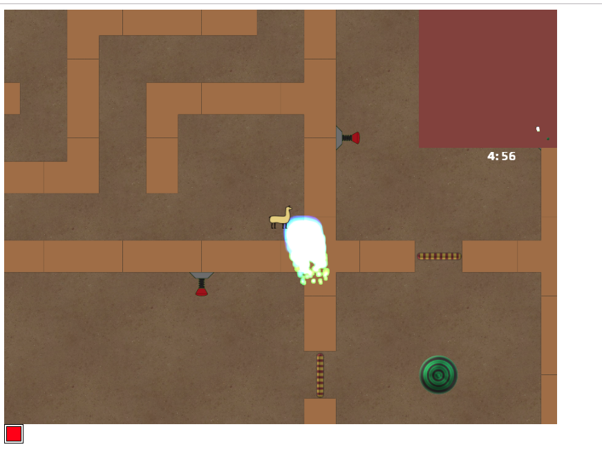
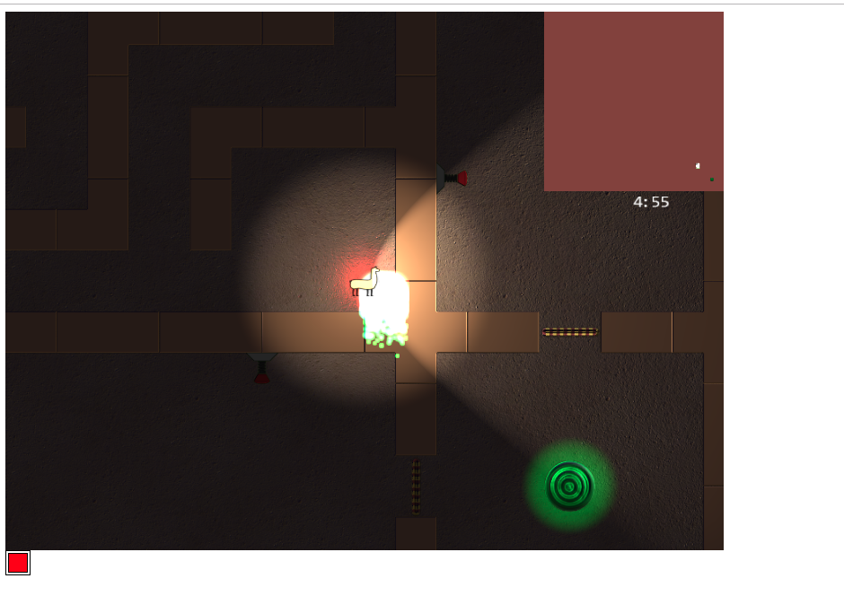
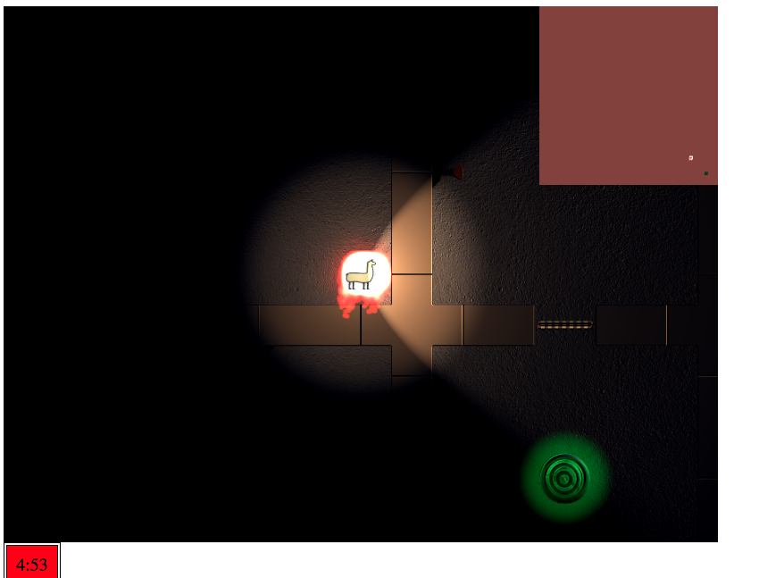

<table border="1" width="100%" bordercolor="#404040">
<tr>
<td style="vertical-align: top;">
		
     <b>Developers</b><br >
         Yazel Arce<br>
         Connor Browne<br>
		 Sahjpreet Brar<br>
</td>
<td>
		<p><b><u>The Llambyrinth</u></b></p>
	   <p>Mr. Llama is looking for some drama. Guide him through the maze to the green circle of drama. Watch out for the sprite. Sometimes the sprite is playful, other times it’s trying to catch you and be boring, unlike the drama.</p>
     <iframe width="560" height="315" src="https://www.youtube.com/embed/v05kNAZR7eE" frameborder="0" allow="accelerometer; encrypted-media; gyroscope" allowfullscreen></iframe><br />
     <a href="https://pankzers.github.io/452TheLlambyrinth/public_html/index.html">Click here to play!</a><br /> 
 		<b>Screen Shots:</b> <br>
    	
		
    	
        
     <br><a href="GamePitch.pptx">Original Game Pitch</a><br>
	</td>
</tr>
</table>